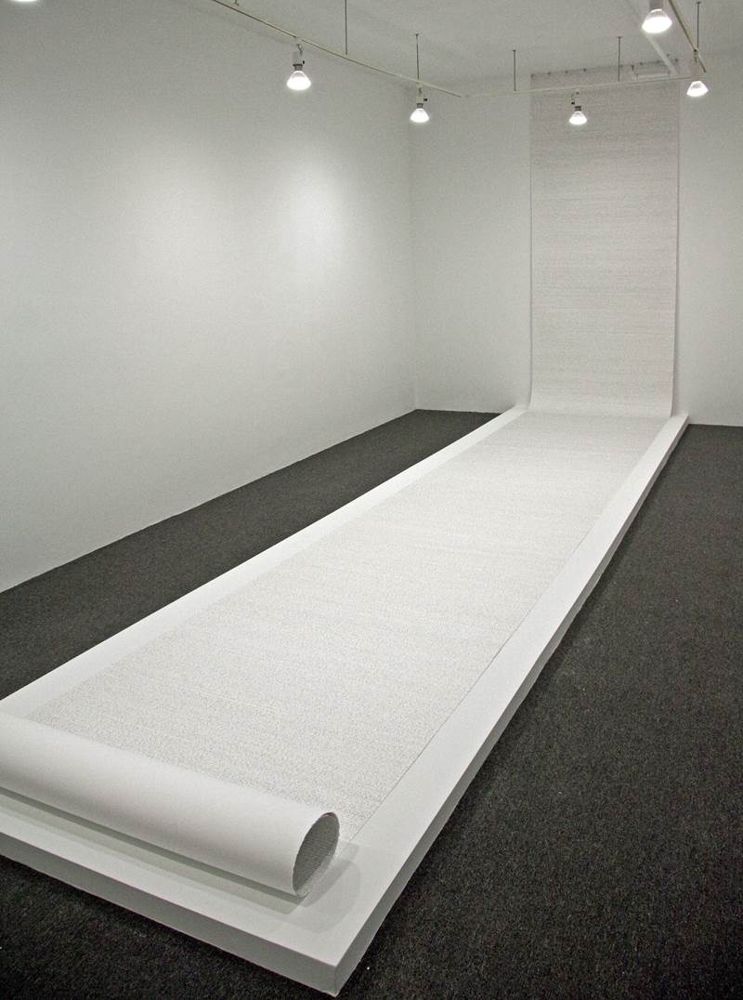

TRIAL 2
2012, graphite on paper roll
Hand written transcription of the audio book version of the English translation of "The Trial" written by Franz Kafka.
As listening to the audio book of "The Trial", I transcribed it on a Stonehenge paper roll.
The transcription process of the entire audio book was repeated until there was no more space on the paper to write further.
The written text of Kafka, translated from German to English, is converted to a spoken language by the reader in the audio book,
and the spoken language of the reader is transformed into an unrecognizable mark making through the transcribing.
The speed of my writing was unable to keep up with the speed of the reading in the audio book.
As a result, the language becomes incomprehensible scribble.
Kafka often referred his writings as scribble.
Photographs of TRIAL 2 by Richard-Max Tremblay